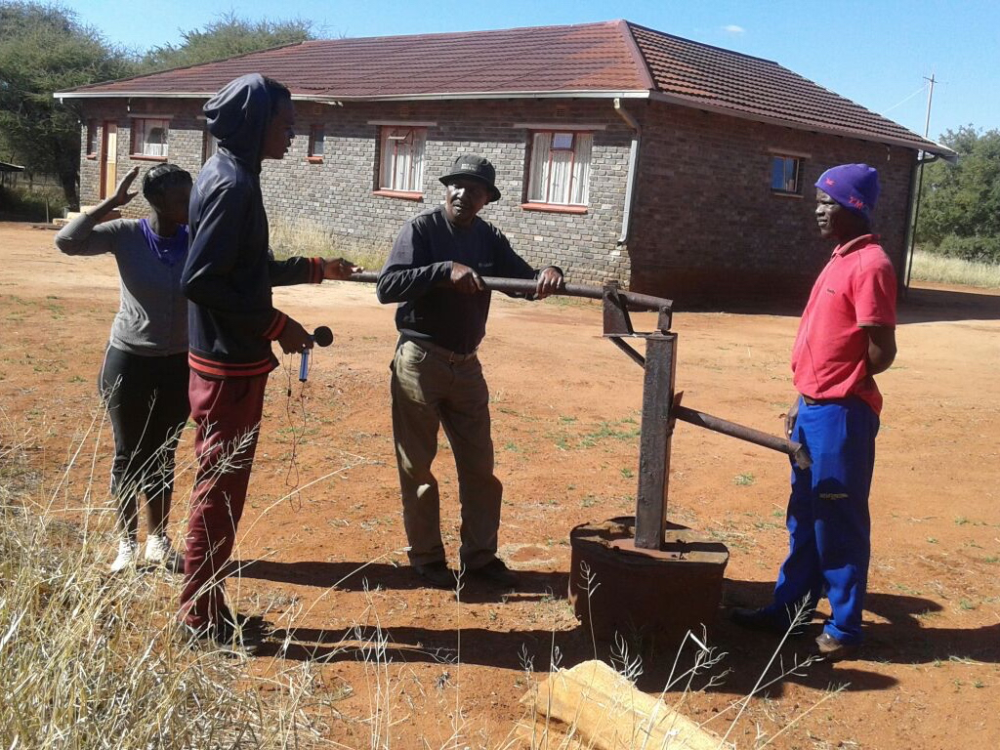
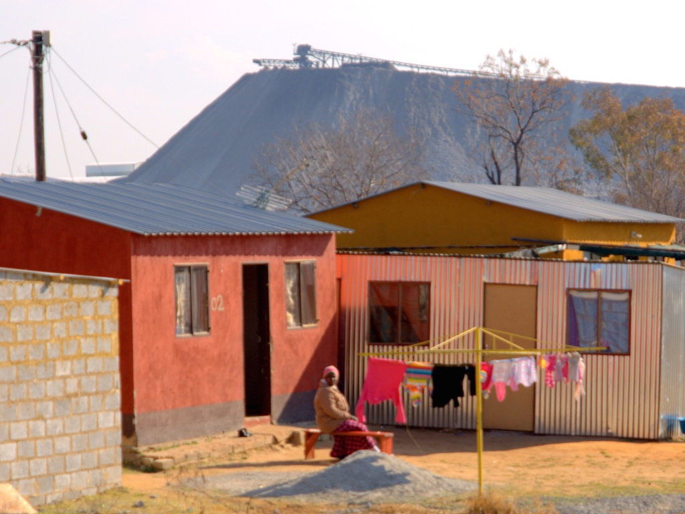
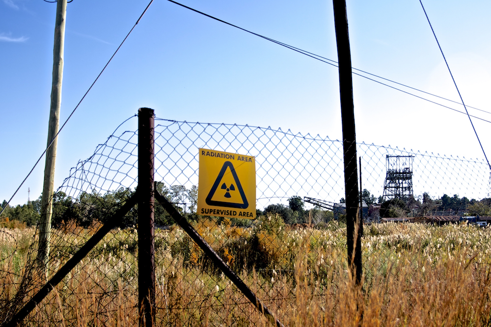

About Us
Resources
Video
Contact
Click on a country or circle below to visit that area's Community Monitors blog.
FEATURED STORIES

Mines Dry up Boreholes in Rustenburg, South Africa

L'effusion de rayonnement á Lubumbashi

Poluição da poeira em Tete